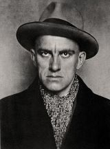

Литература серебряного века
Владимир Маяковский родился в селе Багдати Кутаисской губернии Российской империи, в семье Владимира Константиновича Маяковского (1857—1906), служившего лесничим
За публичные выступления Владимира Маяковского отчислили из училища. В 1913–1914 годах прошло известное турне футуристов: творческая группа с выступлениями проехала с гастролями по российским городам.
В 1922 году Владимир Маяковский возглавил литературную группу «Левый фронт искусств», а вскоре и одноименный журнал творческого объединения.
В 1925-27х годах Владимир Маяковский уехал в турне заграницу. После возвращения из США Владимир Маяковский написал цикл «Стихи об Америке», работал над сценариями советских фильмов.
В 1928–1929 годах Маяковский написал сатирические пьесы «Клоп» и «Баня». Обе премьеры прошли в Театре Мейерхольда.